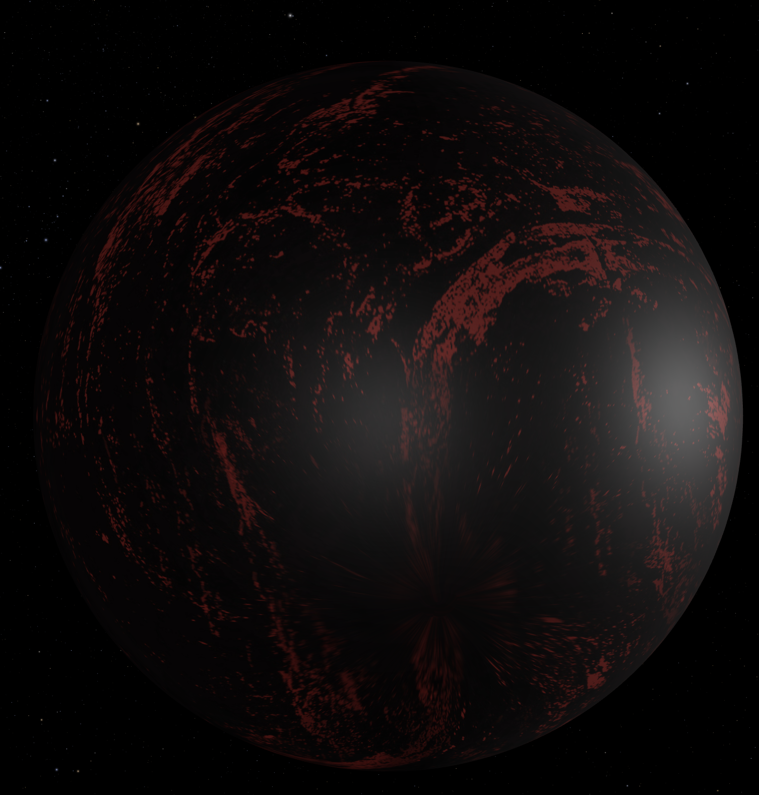
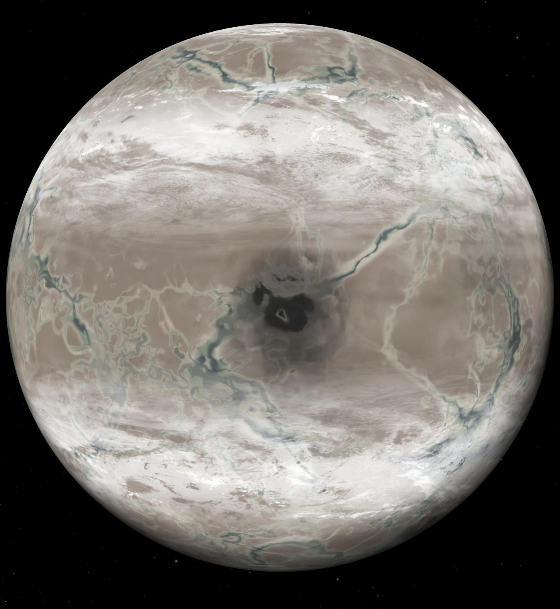

Exoplanet
Exoplanets are planets orbiting stars outside our solar system.
They vary in size and conditions, with some potentially habitable.
Scientists study them to understand the universe and
search for life beyond Earth.
Do you know how many
Exoplanets have been discovered so far?
Most interesting Exoplanet list
Proxima Centauri b
Closet exoplanet from Earth
4.24 light-years away from Earth
Size: 1.3 x Earth
Discovery Date: 2016
Proxima Centauri b is the closest known exoplanet to Earth,
orbiting within the habitable zone of the red dwarf star
Proxima Centauri, which is part of the Alpha Centauri
star system. While it is within the temperature range
for liquid water to exist, its habitability is still
debated due to potential high radiation exposure from
its parent star. It is tidally locked, meaning one side
always faces the star while the other remains in darkness,
creating extreme temperature differences.

KELT-9b
Hottest exoplanet
750 light-years away from Earth
Size: 1.27 x Jupiter
Discovery Date: 2017
Kepler-452b is often called 'Earth 2.0' or 'Earth’s cousin'
because of its similarity in size and its orbit around a Sun-like star.
It is about 60% larger than Earth and takes 385 days to complete one orbit,
making its year slightly longer than Earth's. However,
its surface conditions remain unknown. Scientists speculate
it may have active volcanoes and a rocky terrain, but because
it is 1,400 light-years away, direct observation remains difficult.
TrES-2b
Darkest exoplanet
670 light-years away from Earth
Size: 1.8 x Jupiter
Discovery Date: 2006
TrES-2b, discovered in 2006, holds the title of the darkest known exoplanet.
It reflects less than 1% of incoming light, making it darker than coal.
It orbits a Sun-like star 750 light-years away and is classified as a hot
Jupiter, meaning it is a gas giant with an extremely close orbit around
its star. Despite its darkness, it glows faintly red due to the extreme
temperatures exceeding 1,800°C.

55 Cancri e
Exopalanet made of Diamond
41 light-years away from Earth
Size: 2 x Earth
Discovery Date: 2004
55 Cancri e, discovered in 2004, is known as the 'Diamond Planet'
because of its high carbon content, which could allow diamonds
to form under extreme pressure. It is a super-Earth, about twice
the size of Earth, and orbits its star so closely that a year
lasts only 18 hours. The planet has a scorching surface temperature of
around 2,400°C, and due to its proximity to its star, it may have a
lava-covered surface.
HD 189773b
Glass Rain exoplanet
64 light-years away from Earth
Size: 1.13 x Jupiter
Discovery Date: 2005
HD 189773b, discovered in 2005, is famous for its terrifying weather.
It experiences winds of over 8,700 km/h and rains molten glass due to
its extreme temperatures. The deep blue color of the planet is caused
by silicate particles in its atmosphere that scatter blue light.
It is a hot Jupiter, meaning it is a gas giant that orbits very close
to its star. The intense radiation from its star causes the atmosphere
to evaporate, forming a comet-like tail behind the planet.

Kepler-452b
Most similar exoplanet to Earth
called Earth 2.0
1400 light-years away from Earth
Size: 1.6 x Earth
Discovery Date: 2005
Kepler-452b, discovered in 2015, is often called 'Earth 2.0' because of its
similarities to Earth. It is about 60% larger than Earth and orbits within
the habitable zone of a Sun-like star. It takes 385 days to complete an orbit,
making its year slightly longer than Earth's. Scientists believe it could have
a rocky surface and possibly an atmosphere, but because it is 1,400
light-years away, direct observation is difficult. Some models suggest that
if it has water, it could be in a stage of runaway greenhouse effect, similar to Venus.